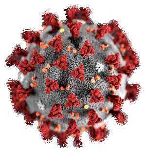
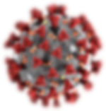

Launching a new brand and online store in one week under quarrantine.


We are the unicorns you seek.
Design + Development. BBT is an agency
that works with organizations
that want to improve their interactive products,
communications, and user experiences.